演示
| 安装环境 | 版本 |
|---|---|
| Ubuntu | 20.04 |
| zabbix | 6.0 |
| mysql | 8.0 |
Ubuntu20.04+mysql8.0+zabbix6.0+elk+filebeat+logstash+grafana
1. zabbix 6.0
1.1. 阿里云镜像地址
https://mirrors.aliyun.com/zabbix/zabbix/6.0/ubuntu/pool/main/z/zabbix-release/
1.2. 下载 zabbix
sudo wget https://repo.zabbix.com/zabbix/6.0/ubuntu/pool/main/z/zabbix-release/zabbix-release_6.0-1+ubuntu20.04_all.deb
sudo dpkg -i zabbix-release_6.0-1+ubuntu20.04_all.deb
sudo apt update
1.3. 安装Zabbix server，Web前端，agent
sudo apt install zabbix-server-mysql zabbix-frontend-php zabbix-apache-conf zabbix-sql-scripts zabbix-agent
1.4. 创建初始数据库
mysql -uroot -p123456
mysql> create database zabbix character set utf8mb4 collate utf8mb4_bin;
mysql> create user zabbix@`%` identified by '123456';
mysql> grant all privileges on zabbix.* to zabbix@`%`;
mysql> quit;
1.5. 导入初始架构和数据，系统将提示您输入新创建的密码[默认密码现在设置为 123456
zcat /usr/share/doc/zabbix-sql-scripts/mysql/server.sql.gz | mysql -uzabbix -p -h10.40.38.67 zabbix # 指定本地的IP地址，不默认就会指向本地localhost
如果报ERROR 2003 (HY000): Can't connect to MySQL server on '10.40.38.67:3306' (111) 看第5章mysql操作指导，多半是因为权限和密码问题
1.6. 为Zabbix server配置数据库
sudo vim /etc/zabbix/zabbix_server.conf
修改 DBPassword=123456
1.7. 启动Zabbix server和agent进程
sudo systemctl restart zabbix-server zabbix-agent apache2 grafana-server
sudo systemctl enable zabbix-server zabbix-agent apache2 grafana-server
1.8. 连接web前端[10.40.38.67 换成你的ip地址] [用谷歌浏览器或者microsoft Edge浏览器打开]
http://10.40.38.67/zabbix
默认的用户名是Admin(A是大写)，Password：zabbix
1.9. 修改时区
sudo vi /etc/apache2/conf-enabled/zabbix.conf
修改标准时区为 Asia/Shanghai
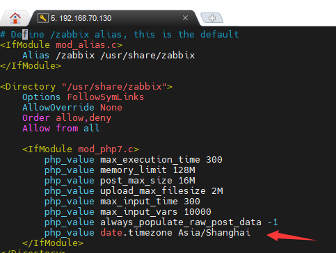
1.10. 中文显示
sudo apt install language-pack-zh-hans #安装中文语言包
sudo vim /etc/locale.gen #找到zh_CN.UTF-8 UTF-8 并取消#号注释，然后保存并退出
sudo locale-gen #编译语言包
sudo vim /etc/default/locale #修改默认语言为中文，将原来的内容改为 LANG=zh_CN.UTF-8
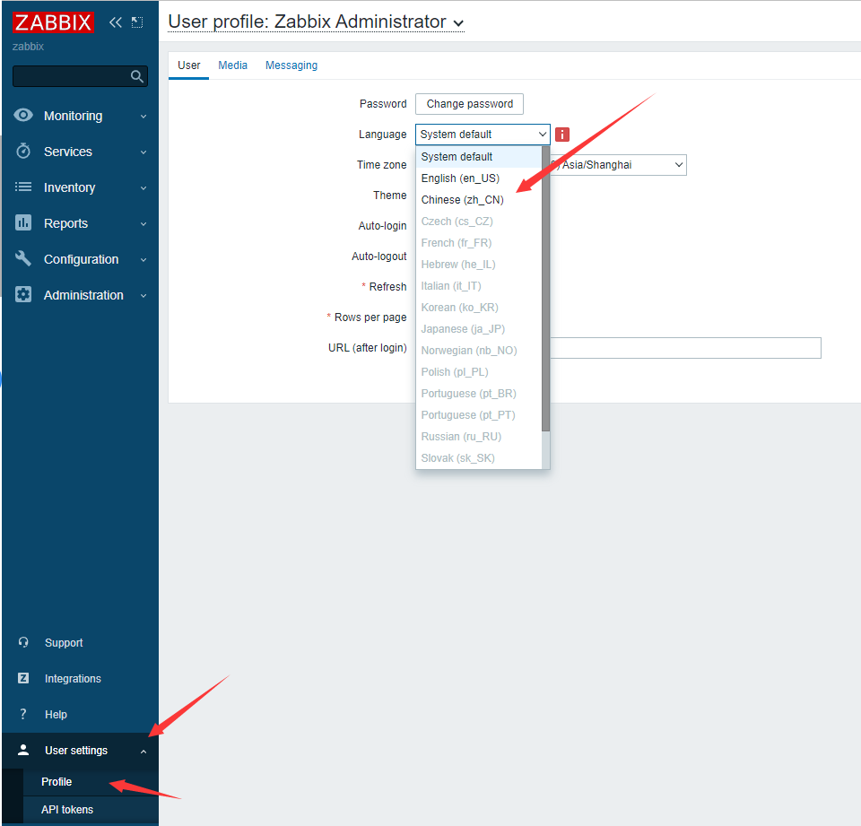
1.11. 安装出现的问题
1.11.1. Minimum required size of PHP post is 16M (configuration option “post_max_size”).
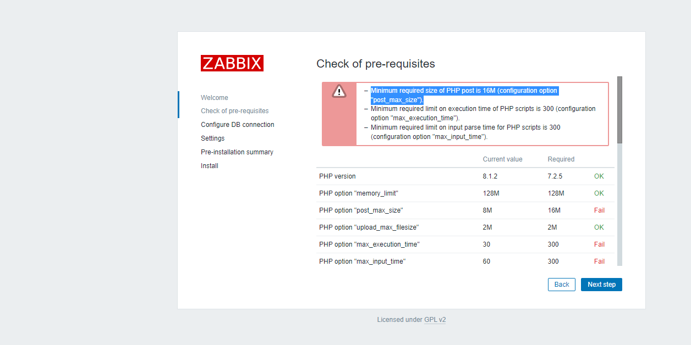
解决步骤：
sudo vi /etc/php/8.1/apache2/php.ini
post_max_size8M 16M
max_execution_time30 300
max_input_time60 300
date.timezone = Asia/Shanghai
sudo systemctl restart zabbix-server zabbix-agent apache2 grafana-server
1.11.2. ERROR 1396 (HY000): Operation CREATE USER failed for 'zabbix'@'%'
mysql> create user zabbix@`%` identified by '123456';
ERROR 1396 (HY000): Operation CREATE USER failed for 'zabbix'@'%'
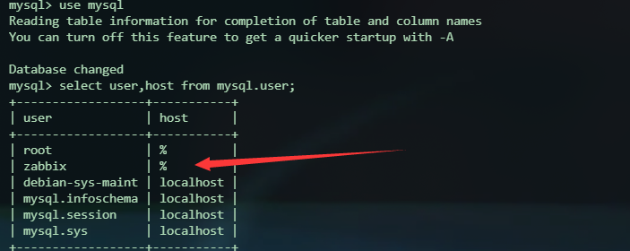
原因分析：
- 已经存在了
zabbix用户 - 在执行删除
zabbix用户的时候没有删除干净
解决方法：
重新进行删除。
drop user zabbix@'%';
flush privileges;
1.12. 卸载 zabbix
-
删除软件
sudo apt-get --purge remove zabbix-server-mysql -y sudo apt-get autoremove zabbix-server-mysql -y sudo apt-get --purge remove zabbix-frontend-php -y sudo apt-get autoremove zabbix-frontend-php -y sudo apt-get --purge remove abbix-apache-conf -y sudo apt-get autoremove abbix-apache-conf -y sudo apt-get --purge remove zabbix-agent -y #删除软件其配置 sudo apt-get autoremove zabbix-agent -y #删除软件依赖包 -
清理数据
sudo dpkg -l |grep ^rc|awk '{print $2}' |sudo xargs dpkg -P -
删除以上apt-get下载的软件包
sudo apt-get autoclean -
删除缓存的所有软件包
sudo apt-get clean -
删除其他软件依赖的但现在已不用的软件包（保留配置文件）
```sh
sudo apt-get autoremove
```
-
查询出冗余文件并删除
sudo find / -name zabbix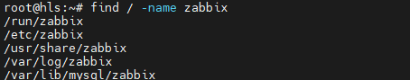
-
执行rm-rf 删除冗余文件
sudo rm -rf /run/zabbix sudo rm -rf /etc/zabbix sudo rm -rf /usr/share/zabbix sudo rm -rf /var/log/zabbix sudo rm -rf /var/lib/mysql/zabbix -
删除包含
zabbix关键字的文件或者文件夹
```sh
sudo find / -name "zabbix*" | sudo xargs rm -rf
```
2 . grafana
2.1. 下载grafana deb安装包
sudo apt-get install -y adduser libfontconfig1
sudo wget https://dl.grafana.com/enterprise/release/grafana-enterprise_8.5.4_amd64.deb
sudo dpkg -i grafana-enterprise_8.5.4_amd64.deb
2.2. 启动grafana-server
sudo systemctl restart grafana-server
sudo systemctl enable grafana-server
2.3安装zabbix插件
grafana-cli plugins list-remote
sudo grafana-cli plugins install alexanderzobnin-zabbix-app
#重启grafana-server
sudo systemctl restart grafana-server
也可以在grafana->plugins这里安装
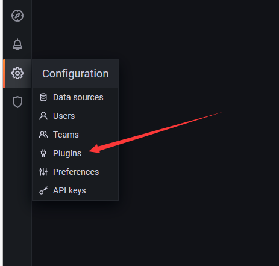
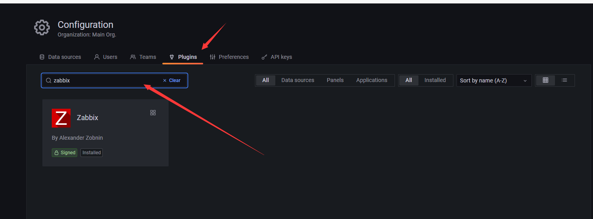
2.4. 登录grafana服务器[10.40.38.67 换成你的ip地址] [用谷歌浏览器或者microsoft Edge浏览器打开]
http:/10.40.38.67:3000/
#默认用户名和密码为admin、admin
2.5. grafana 配置zabbix数据源
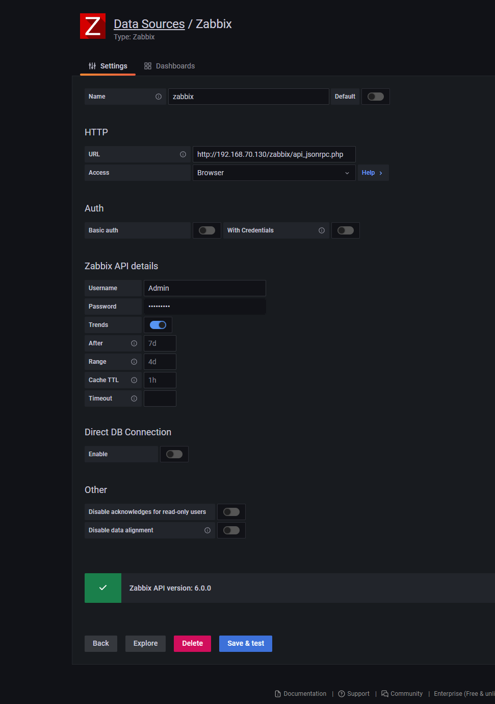
2.6. grafana 配置zabbix监控面板
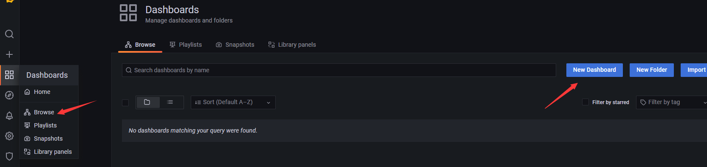
在点击完new dashboard 按钮以后 按ctrl + s 保存一个自己定义的仪表盘
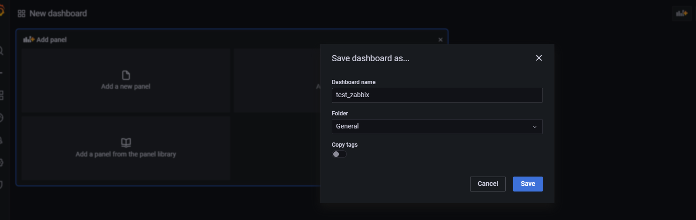
2.7. grafana增加主题
安装插件：grafana-cli plugins install yesoreyeram-boomtheme-panel
grafana主题地址：https://github.com/charles1503/grafana-theme/tree/master/CSS/themes/grafanas
grafana更改主题教程：https://www.bilibili.com/read/cv7004400
视频教程：https://cloud.tencent.com/developer/video/11330
http://10.40.38.67:3000/public/themes/aquamarine.css
具体操作步骤：
-
创建一个目录，用于存放下载对应主题的
css文件sudo mkdir /usr/share/grafana/public/themes/ cd /usr/share/grafana/public/themes/使用一个for 循环下载对应的所有主题
css文件for f in grafana-base.css aquamarine.css hotline.css dark.css plex.css space-gray.css organizr-dashboard.css;do wget https://raw.githubusercontent.com/505384662/grafana-theme/master/CSS/themes/grafana/$f;done -
为
Grafana安装社区插件Boom Themesudo grafana-cli plugins install yesoreyeram-boomtheme-panel sudo systemctl restart grafana-server -
在
Dashboard中添加Boom Theme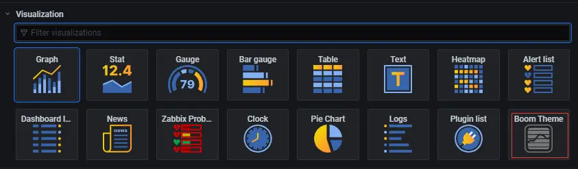
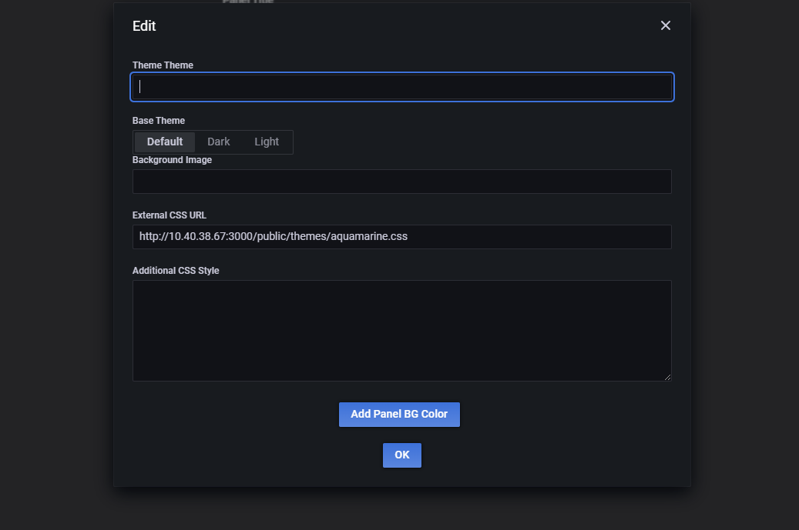
2.8. grafana 主题修改地址
cd /usr/share/grafana/public/themes
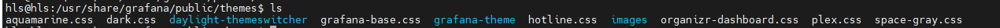
2.9. grafana 加时钟
grafana-cli plugins install grafana-clock-panel
systemctl restart grafana-server
2.10. grafana flowcharting安装
sudo grafana-cli plugins install agenty-flowcharting-panel
sudo systemctl restart grafana-server
2.11 grafana 修改模板地址
https://grafana.com/grafana/dashboards
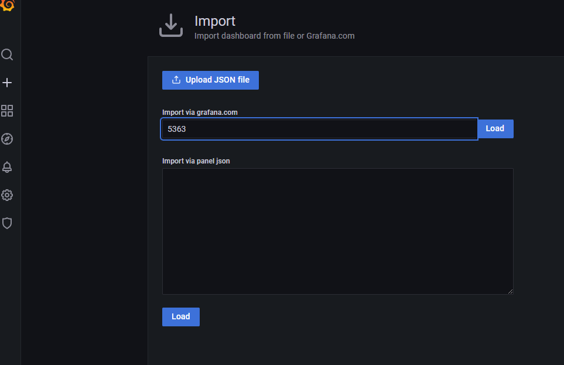
zabbix 修改配置地址：http://192.168.70.130/zabbix/setup.php
zabbix 展示地址：http://192.168.70.130/zabbix/zabbix.php?action=dashboard.view
grafana 展示地址: http://192.168.70.130:3000/d/tYxzFya7z/test_zabbix?orgId=1
2.12. Grafana 匿名访问（免登录）
-
修改
Grafana配置文件在
Grafana的配置文件/etc/grafana/grafana.ini中，找到[auth.anonymous]配置块，将其下的匿名访问控制enabled设置为true，组织权限设置为ViewerViewer:**只读**模式Editor:**可编辑**模式Admin:**管理员**模式#################################### Anonymous Auth ###################### # Set to true to disable (hide) the login form, useful if you use OAuth, defaults to false disable_login_form = true [auth.anonymous] # enable anonymous access enabled = true # specify organization name that should be used for unauthenticated users org_name = Main Org. # specify role for unauthenticated users org_role = Viewer -
重启
Grafana服务修改完配置文件，重启
Grafana服务，命令如下：sudo systemctl restart grafana-server
2.13. 卸载 grafana
-
查找到安装软件名
sudo dpkg -l | grep grafana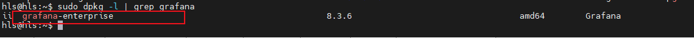
-
删除软件
```sh
sudo dpkg -r grafana-enterprise
```
-
查询出冗余文件并删除
find / -name grafana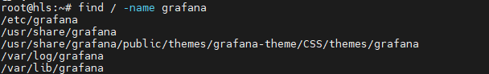
用rm-rf 命令删除
rm -rf /etc/grafana rm -rf /usr/share/grafana rm -rf /usr/share/grafana/public/themes/grafana-theme/CSS/themes/grafana rm -rf /var/log/grafana rm -rf /var/lib/grafana
3. apache2
3.1. apache2启动报错
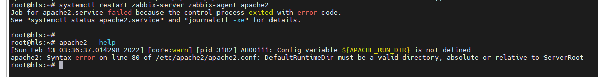
大致意思没有导入apache 环境变量 解决办法:
source /etc/apache2/envvars
还是报错
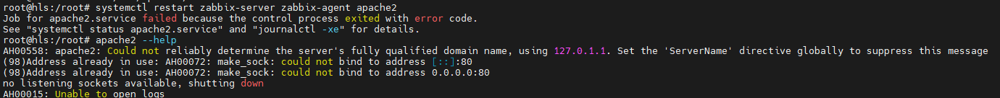
大致意思是80端口被占用了 我选择的方法是kill占用进程在重启
root@hls:/root# netstat -lnp|grep 80
tcp 0 0 0.0.0.0:80 0.0.0.0:* LISTEN 950/nginx: master p
tcp6 0 0 :::80 :::* LISTEN 950/nginx: master p
unix 2 [ ACC ] STREAM LISTENING 41930 1228/zabbix-plugin_ /tmp/plugin835680808
root@hls:/root# kill -9 950
root@hls:/root# systemctl restart zabbix-server zabbix-agent apache2
3.2. 卸载apache2
-
删除软件
//1. 删除apache sudo apt-get --purge remove apache2 sudo apt-get --purge remove apache2.2-common //2.找到没有删除掉的配置文件，一并删除 sudo find /etc -name "*apache*" |xargs rm -rf sudo rm -rf /var/www sudo rm -rf /etc/libapache2-mod-jk //3.删除关联，这样就可以再次用apt-get install apache2 重装了 #dpkg -l |grep apache2|awk '{print $2}'|xargs dpkg -P//注意：这一步可能会报错，但也没关系 -
查询出冗余文件并删除
sudo find / -name apache2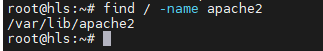
-
用rm -rf 命令删除
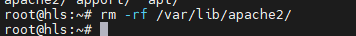
4. Nginx
4.1. 官网下载地址
http://nginx.org/en/download.html
4.2. 一些环境准备
-
安装编译工具
sudo apt-get install build-essential 安装编译工具 安装gcc什么的好便于下面编译安装 -
安装pcre包
sudo apt-get update sudo apt-get install libpcre3 libpcre3-dev sudo apt-get install openssl libssl-dev -
安装 zlib 库
sudo apt install zlib1g-dev
4.3. 下载安装Nginx
sudo wget http://nginx.org/download/nginx-1.21.6.tar.gz
sudo tar -xzvf nginx-1.21.6.tar.gz
cd nginx-1.21.6
sudo ./configure --prefix=/usr/local/nginx --with-http_ssl_module --with-stream --with-mail=dynamic #最好用 --prefix指定路径，便于后面删除[只需要删除prefix指定的文件夹就行了]，不指定的话后面删除比较麻烦
sudo make
sudo make install
4.4. 制作软连接
ln -s /usr/local/nginx/sbin/nginx /usr/local/sbin/
4.5. 配置环境变量 编辑/etc/profile并且追加Nginx的环境变量
export NGINX_HOME=/usr/local/nginx
export PATH=$PATH:$NGINX_HOME/sbin
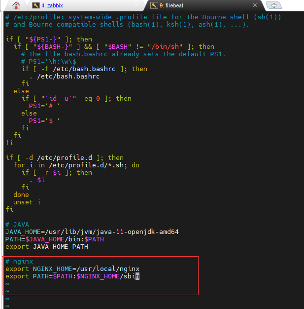
4.5.1. 生效环境变量
source /etc/profile
4.6. 测试是否安装成功
nginx -v
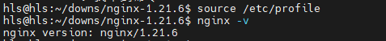
4.7. 启动Nginx
sudo nginx
4.8. 强制停止Nginx
sudo pkill -9 nginx
4.9. 查看Nginx进程
ps aux|grep nginx
4.10. 配置防火墙
sudo ufw allow 'Nginx Full'
4.11. 验证防火墙是否允许 出现下面两种情况都认为可以
Status: active
To Action From
-- ------ ----
22/tcp ALLOW Anywhere
Nginx Full ALLOW Anywhere
22/tcp (v6) ALLOW Anywhere (v6)
Nginx Full (v6) ALLOW Anywhere (v6)
sudo ufw status
状态：不活动
4.12. 测试访问
http://192.168.70.132:7000
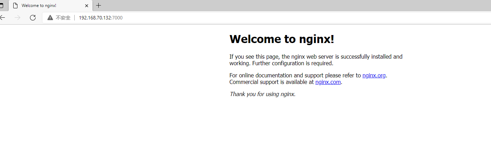
4.13. Nginx 相关文件位置
nginx path prefix: "/usr/local/nginx"
nginx binary file: "/usr/local/nginx/sbin/nginx"
nginx modules path: "/usr/local/nginx/modules"
nginx configuration prefix: "/usr/local/nginx/conf"
nginx configuration file: "/usr/local/nginx/conf/nginx.conf"
nginx pid file: "/usr/local/nginx/logs/nginx.pid"
nginx error log file: "/usr/local/nginx/logs/error.log"
nginx http access log file: "/usr/local/nginx/logs/access.log"
nginx http client request body temporary files: "client_body_temp"
nginx http proxy temporary files: "proxy_temp"
nginx http fastcgi temporary files: "fastcgi_temp"
nginx http uwsgi temporary files: "uwsgi_temp"
nginx http scgi temporary files: "scgi_temp"
4.14 卸载 Nginx
sudo rm -rf /usr/local/nginx
sudo rm -rf /usr/local/nginx/sbin/nginx #软连接也记得删除
如果想完全干净，/etc/profile 配置文件中指定的环境变量也可以删除
5. mysql
5.1. 安装mysql
sudo apt update
sudo apt install mysql-server
安装完成后，MySQL服务将自动启动。要验证MySQL服务器正在运行，请输入：
sudo systemctl status mysql
5.2. 彻底卸载mysql方法
-
查看依赖包
dpkg --list | grep mysql -
先依次执行以下命令
sudo apt-get remove mysql-common sudo apt-get autoremove --purge mysql-server-5.0 # 卸载 MySQL 5.x 使用, 非5.x版本可跳过该步骤 sudo apt-get autoremove --purge mysql-server -
然后再用
dpkg --list | grep mysql -
查看一下依赖包最后用下面命令清除残留数据
dpkg -l |grep ^rc|awk '{print $2}' |sudo xargs dpkg -P -
查看从MySQL APT安装的软件列表, 执行后没有显示列表, 证明MySQL服务已完全卸载
dpkg -l | grep mysql | grep i -
博客地址
https://blog.csdn.net/PY0312/article/details/89481421
5.3. MySQL在Ubuntu上启动出错Could not open ‘abstractions/mysql‘
rm -rf /etc/apparmor.d/abstractions/mysql
rm -rf /etc/apparmor.d/cache/usr.sbin.mysqld
find / -name 'mysql*' -exec rm -rf {} \;
5.2. 连接MySql报错“can’t connect to local mysql server through socket ‘/var/run/mysqld/mysqld.sock’
cd /etc/init.d
sudo service mysql stop
sudo service mysql start
5.5. mysql Ubuntu 20.04 Access denied for user ‘root’@’localhost
-
首先输入以下指令 获取密码：
sudo cat /etc/mysql/debian.cnf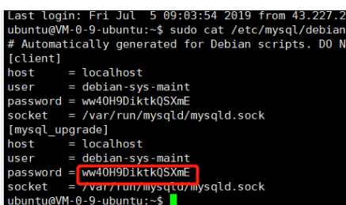
-
再输入以下指令进入mysql
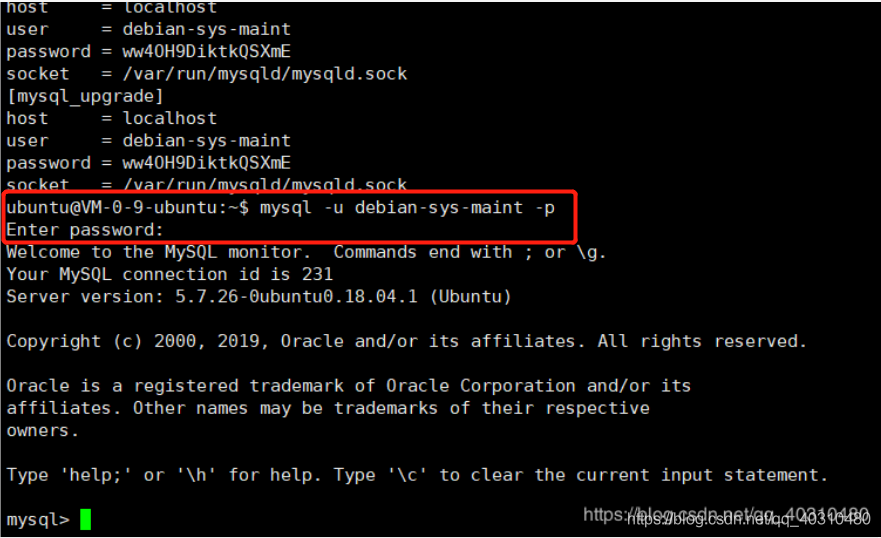
-
查询user关键字段
select user, authentication_string,plugin,Host from mysql.user;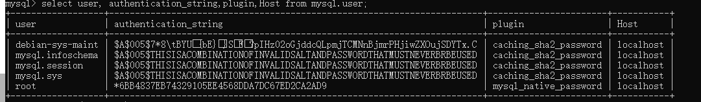
-
修改密码格式
use mysql; update user set plugin='mysql_native_password' where user='root'; flush privileges; -
修改密码
use mysql; ALTER USER 'root'@'localhost' IDENTIFIED WITH mysql_native_password BY '123456'; flush privileges; -
输入
mysql -uroot -p123456;查看效果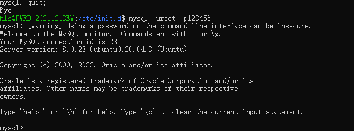
-
让别的ip能连上wsl数据库
use mysql; update user set Host='%' where user='root'; flush privileges;输入
select user, authentication_string,plugin,Host from mysql.user;查看效果
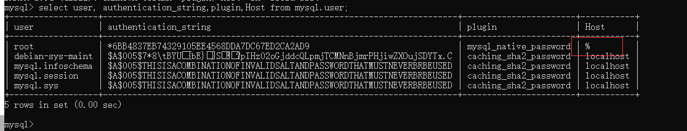
-
开启远程访问
sudo vi /etc/mysql/mysql.conf.d/mysqld.cnf # 注释 bind-address = 127.0.0.1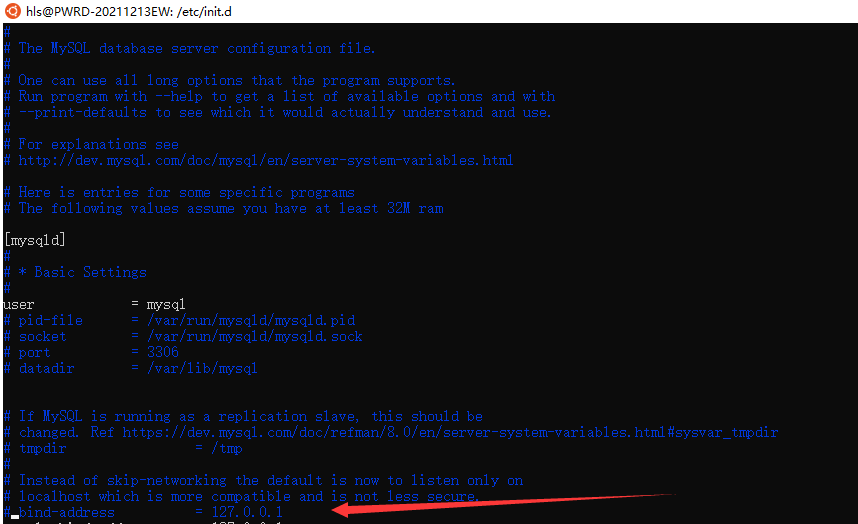
-
重启mysql
sudo service mysql restart -
效果
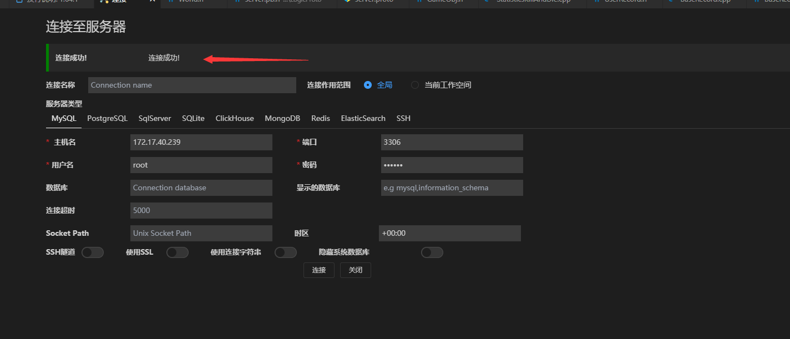
6. ELK
6.1. 一些准备
6.1.1. 官网地址
https://www.elastic.co/guide/en/elasticsearch/reference/8.0/deb.html#deb-repo
6.1.2. 虚拟机
-
想要多开最好是克隆一份出来 比如2就是克隆的1的镜像
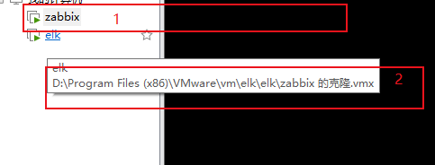
-
修改 克隆的虚拟机网卡地址
sudo vim /etc/netplan/00-installer-config.yaml修改内容:
network: ethernets: ens33: #配置的网卡的名称 addresses: [192.168.70.130/24] #配置的静态ip地址和掩码 dhcp4: no #关闭DHCP，如果需要打开DHCP则写yes optional: true gateway4: 192.168.70.2 #网关地址 nameservers: addresses: [192.168.70.2,114.114.114.114] #DNS服务器地址，多个DNS服务器地址需要用英文逗号分隔开 version: 2 renderer: networkd #指定后端采用systemd-networkd或者Network Manager，可不填写则默认使用systemd-workd -
使配置生效
sudo netplan apply -
注意事项
1、ip地址和DNS服务器地址需要用[]括起来，但是网关地址不需要 2、注意每个冒号后边都要先加一个空格 3、注意每一层前边的缩进，至少比上一层多两个空格
6.1.3. 安装java环境
- 安装java
sudo apt install openjdk-8-jdk
-
查看java 版本
sudo java -version-
查看 java 路径
sudo which java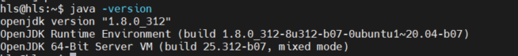
-
ls -l /usr/bin/java 看看这是否是个软连接，找出这个软连接指向的路径
ls -l /usr/bin/java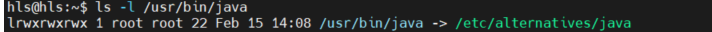
的确为软连接，继续往下找指向的路径
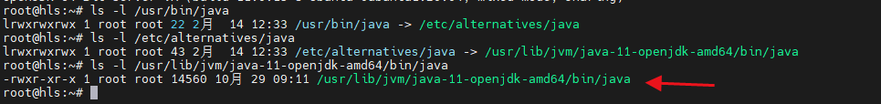
至此，java 的安装路径即为 /usr/lib/jvm/java-11-openjdk-amd64/bin/java
-
配置 java 环境
sudo vim /etc/profile -
在弹出的 vim 编辑器中输入
# JAVA JAVA_HOME=/usr/lib/jvm/java-11-openjdk-amd64 PATH=$JAVA_HOME/bin:$PATH export JAVA_HOME PATH -
esc 退出编辑模式，输入 :x后，单击回车退出。
在终端输入
source /etc/profile使之前的配置生效。
-
验证
java -version
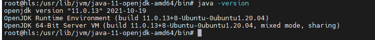
$JAVA_HOME/bin/java -version
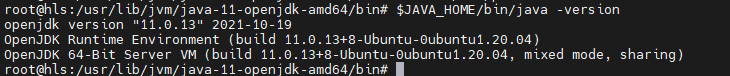
-
6.1.4. python3
[不是必须装主要是想使用 json.tool 格式化输出]
-
安装python3.8
sudo apt-get install python3.8 -
建立软连接
sudo ln -s /usr/bin/python3.8 /usr/bin/python
-
如果想要删除软连接
sudo rm -rf /usr/bin/python -
格式化输出
curl -XGET http://192.168.70.131:9200/_mapping | python -m json.tool
6.2. Elasticsearch
6.2.1. 基础知识
6.2.1.1. 和关系型数据库的比较
| DBMS | Elasticsearch |
|---|---|
| database | Index |
| table | type(在7.0之后type为固定值_doc) |
| Row | Document |
| Column | Field |
| Schema | Mapping |
| SQL | DSL(Descriptor Structure Language) |
6.2.2 安装Elasticsearch
-
deb包安装方式
sudo wget https://artifacts.elastic.co/downloads/elasticsearch/elasticsearch-8.2.2-amd64.deb sudo wget https://artifacts.elastic.co/downloads/elasticsearch/elasticsearch-8.2.2-amd64.deb.sha512 shasum -a 512 -c elasticsearch-8.2.2-amd64.deb.sha512 sudo dpkg -i elasticsearch-8.2.2-amd64.deb -
执行**sudo dpkg -i elasticsearch-8.2.2-amd64.deb** 回生成超级用户密码 0NgzdrlHquc1YdXrQout
--------------------------- Security autoconfiguration information ------------------------------ Authentication and authorization are enabled. TLS for the transport and HTTP layers is enabled and configured. The generated password for the elastic built-in superuser is : 0NgzdrlHquc1YdXrQout If this node should join an existing cluster, you can reconfigure this with '/usr/share/elasticsearch/bin/elasticsearch-reconfigure-node --enrollment-token <token-here>' after creating an enrollment token on your existing cluster. You can complete the following actions at any time: Reset the password of the elastic built-in superuser with '/usr/share/elasticsearch/bin/elasticsearch-reset-password -u elastic'. Generate an enrollment token for Kibana instances with '/usr/share/elasticsearch/bin/elasticsearch-create-enrollment-token -s kibana'. Generate an enrollment token for Elasticsearch nodes with '/usr/share/elasticsearch/bin/elasticsearch-create-enrollment-token -s node'. ------------------------------------------------------------------------------------------------- -
生成 ca 、生成 证书
# 生成 ca # 根据提示： # 输入 ca 的密码（密码不要忘记，后面生成证书需要） # 输入生成 ca 的文件名（默认会让你输入 elastic-stack-ca.p12，这里就按照默认的来） sudo /usr/share/elasticsearch/bin/elasticsearch-certutil ca # 生成证书 # 根据提示： # 输入之前 ca 的密码 # 输入生成证书的文件名（默认让你输入 elastic-certificates.p12，这里就按照默认的来） # 输入生成证书的密码（密码不要忘记，这个密码在配置 ES keystore 的时候需要） # --ca 后面的文件是上面步骤生成的 elastic-stack-ca.p12 文件，如果修改了的话，这里也需要修改 sudo /usr/share/elasticsearch/bin/elasticsearch-certutil cert --ca elastic-stack-ca.p12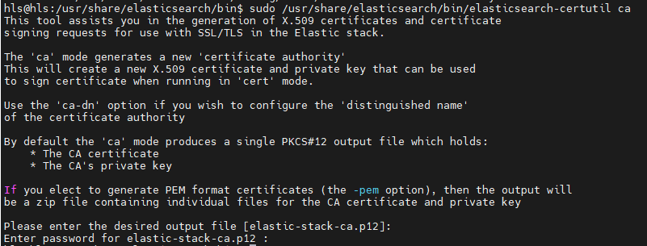
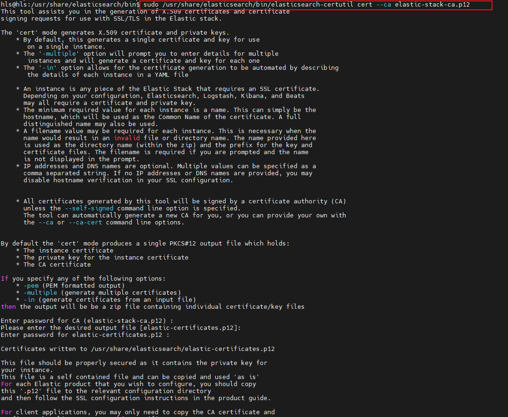
为了方便管理，一般将 ca 与证书放到 ~/.config/certs 目录下
-
# 创建目录并移动 ca 与证书 sudo mkdir -p ~/.config/certs && sudo mv /usr/share/elasticsearch/elastic-stack-ca.p12 /usr/share/elasticsearch/elastic-certificates.p12 ~/.config/certs
6.2.3. 启动 Elasticsearch
[为了安全考虑Elasticsearch不允许使用root用户来启动]
-
打开 elasticsearch 配置文件
sudo vim /etc/elasticsearch/elasticsearch.yml #打开配置文件 -
修改 netWork.host, http.port 字段
network.host: 10.40.38.66 #注意 network.host:和10.40.38.66 之间需要空格要不启动会有问题，因为配置文件类型为key-vale格式http.port: 9200 #注意 http.port:和9200 之间需要空格要不启动会有问题，因为配置文件类型为key-vale格式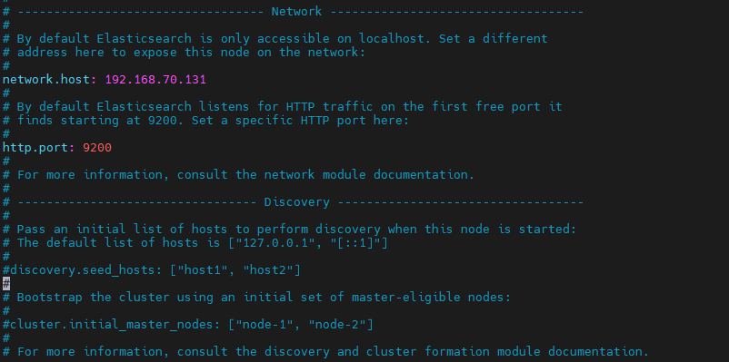
-
因为是内网测试暂时关闭 xpack 安全验证方面选项,以后需要再去开启
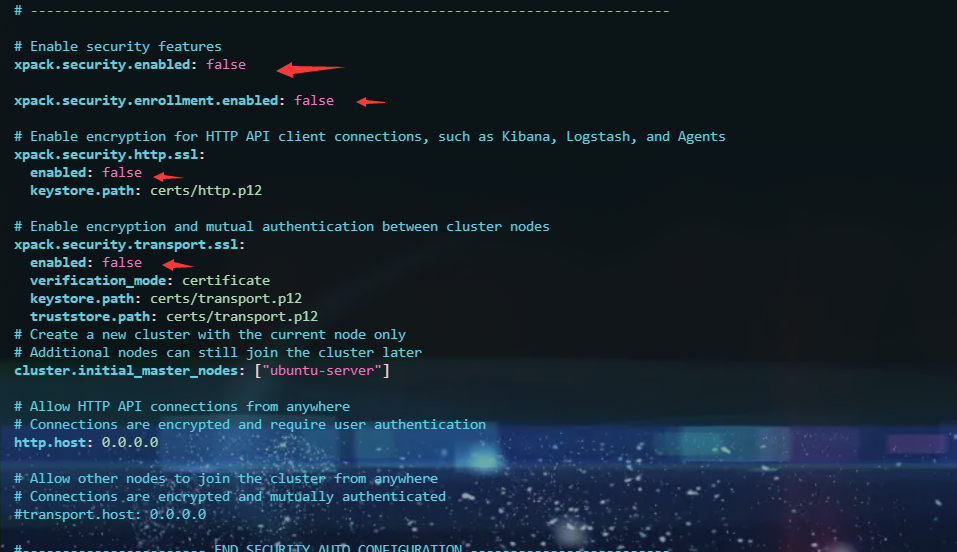
-
启动Elasticsearch
sudo systemctl start elasticsearch.service -
开机启动elasticsearch
sudo systemctl enable elasticsearch.service
6.2.4. 连接grafana
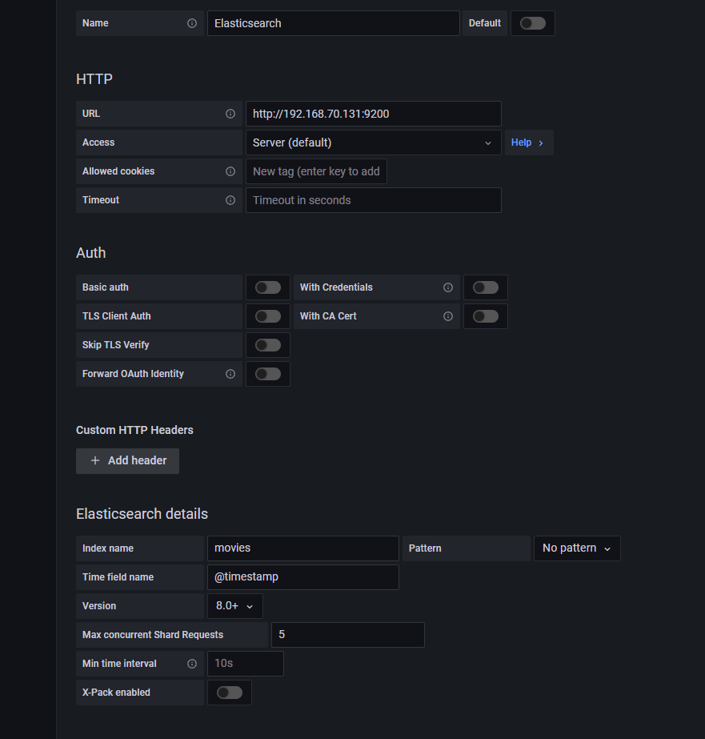
5.2.5. Elasticsearch 操作命令
-
用jps命令关闭Elasticsearch
$ jps | grep Elasticsearch 14542 Elasticsearch kill -9 14542 -
查看 Elasticsearch 端口
sudo netstat -tnlp |grep java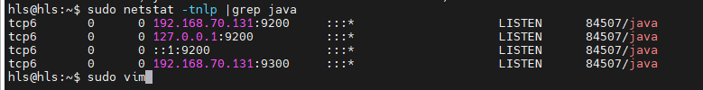
-
检测是否启动成功
curl -XGET 'http://192.168.70.131:9200/' -H 'Content-Type: application/json' -
用journal 查看系统日志
sudo journalctl -f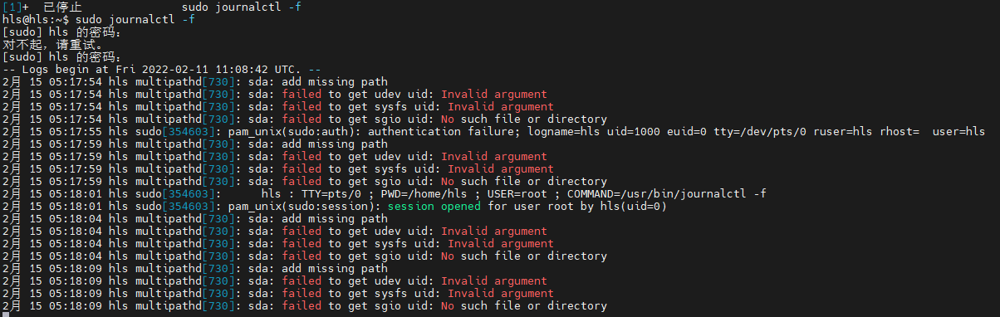
-
用 journal 查看elasticsearch 服务日志
sudo journalctl --unit elasticsearch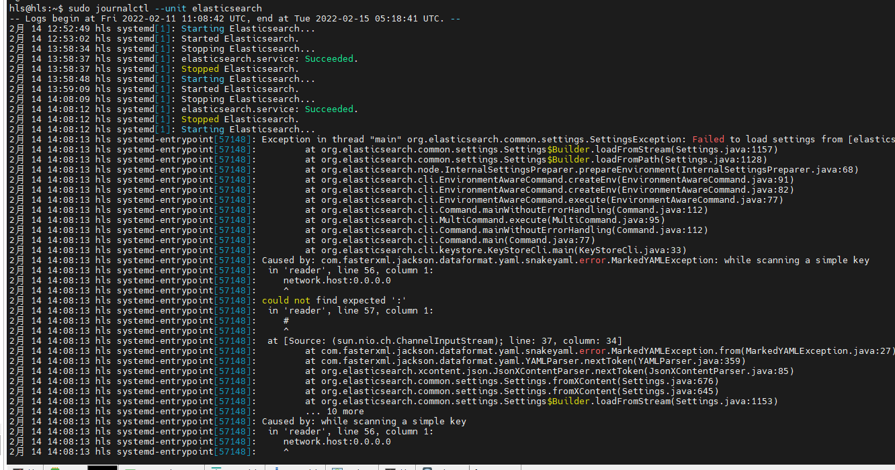
-
用journal 查看elasticsearch 指定时间范围的日志
sudo journalctl --unit elasticsearch --since "2022-02-01 18:17:16"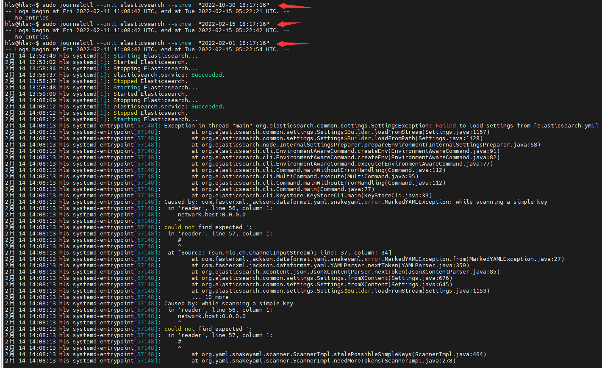
-
查看 elasticsearch.log
sudo vim /var/log/elasticsearch/elasticsearch.log
6.2.6. Elasticsearch 卸载
# 查看安装的软件
sudo dpkg -l | grep elasticsearch
#查看安装关联
sudo dpkg -L elasticsearch
#移除安装软件
sudo dpkg -P elasticsearch
#继续查看未卸载的目录和文件
sudo find / -name elasticsearch
#移除目录和文件具体参考自己的环境
sudo rm -rf /var/lib/elasticsearch &&
sudo rm -rf /var/lib/dpkg/info/elasticsearch.* &&
sudo rm -rf /etc/default/elasticsearch &&
sudo rm -rf /etc/init.d/elasticsearch &&
sudo rm -rf /var/log/elasticsearch &&
sudo rm -rf /usr/share/elasticsearch
#在此查看是否有关联的目录和文件
sudo find / -name elasticsearch
6.3. Logstash
6.3.1. 安装 Logstash
-
下载安装公共签名
sudo wget -qO - https://artifacts.elastic.co/GPG-KEY-elasticsearch | sudo apt-key add - -
接下安装
apt-transport-https包sudo apt-get install apt-transport-https -
将存储库保存到
/etc/apt/sources.list.d/elastic-8.x.listecho "deb https://artifacts.elastic.co/packages/8.x/apt stable main" | sudo tee -a /etc/apt/sources.list.d/elastic-8.x.list -
然后你就能安装Elasticsearch了
sudo apt-get update && sudo apt-get install logstash
6.3.2. 插件地址
https://www.elastic.co/guide/en/logstash-versioned-plugins/current/index.html
6.3.3. 配置表字段解释
https://blog.csdn.net/weixin_42073629/article/details/110154037?utm_medium=distribute.pc_aggpage_search_result.none-task-blog-2~aggregatepage~first_rank_ecpm_v1~rank_v31_ecpm-1-110154037.pc_agg_new_rank&utm_term=logstash%E5%8F%82%E6%95%B0convert&spm=1000.2123.3001.4430
6.3.4. 查看安装的插件
sudo /usr/share/logstash/bin/logstash-plugin list
6.3.5. 启动Lostash
-
修改 logstash.yml 配置
sudo vim /etc/logstash/logstash.yml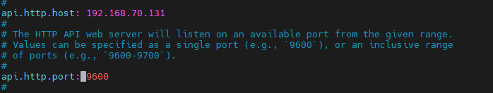
6.3.6. 导入数据[利用logstash 直接分析movies.csv 传送给elasticsearch方式]
收集流程: movies.csv->logstash->elasticdearch->grafana
-
下载ml-latest.zip 数据
sudo wget https://files.grouplens.org/datasets/movielens/ml-latest.zip -
解压 ml-latest.zip
sudo unzip ml-latest.zip -
在/etc/logstash 目录下创建logstash.conf 文件
sudo vim /etc/logstash/logstash.conf -
把以下内容写入logstash.conf
input { file { #监听文件的路径 path => "/home/hls/downs/ml-latest/movies.csv" #监听文件的起始位置，默认是end start_position => "beginning" #监听文件读取信息记录的位置 sincedb_path => "/home/hls/downs/ml-latest/db_path.log" } } filter { csv { separator => "," columns => ["id","content","genre","@timestamp"] } mutate { # split => { "genre" => "|" } # remove_field => ["path", "host","@timestamp","message"] #删除无用字段 } mutate { split => ["content", "("] #左括号分割 add_field => { "title" => "%{[content][0]}"} #增加字段 add_field => { "year" => "%{[content][1]}"} #增加字段 } mutate { convert => { #year 转换成整型 "year" => "integer" } strip => ["title"] #去掉字段首尾的空格 # remove_field => ["path", "host","@timestamp","message","content"] #删除无用字段 } } output { elasticsearch { # 双引号中的内容为ES的地址，视实际情况而定 hosts => "http://192.168.70.131:9200" index => "movies" document_id => "%{id}" #docId 等价于_id 字段 } stdout {} } -
如果需要重新导入，先删除db_path.log 文件
sudo rm -rf /var/lib/logstash/.lock sudo rm -rf /home/hls/downs/ml-latest/db_path.log sudo /usr/share/logstash/bin/logstash -f /etc/logstash/logstash.conf -
报错
-
执行命令**sudo /usr/share/logstash/bin/logstash -f /etc/logstash/logstash.conf** 后如果报错
WARNING: Could not find logstash.yml which is typically located in $LS_HOME/config or /etc/logstash. You can specify the path using --path.settings. Continuing using the defaults那么就创建软连接
cd /usr/share/logstash sudo ln -s /etc/logstash ./config -
执行命令**sudo /usr/share/logstash/bin/logstash -f /etc/logstash/logstash.conf** 后如果报错
Logstash could not be started because there is already another instance using the configured data directory. If you wish to run multiple instances, you must change the "path.data" setting.那么就去 logstash.yml 中path.data 指定的路径上去删除.lock文件
cd /var/lib/logstash sudo ls -a sudo rm -rf .lock或者直接一句话
sudo rm -rf /var/lib/logstash/.lock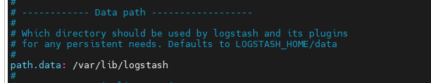
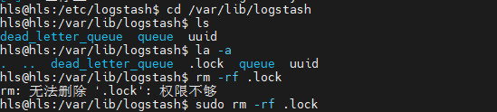
-
6.3.7. 强制查看输出 logstash.conf 修改成你自己的文件
sudo /usr/share/logstash/bin/logstash /etc/logstash/logstash.conf --verbose --debug
6.3.8. 查看数据
-
用Kibana的命令行工具执行 GET _cat/indices 命令，就能看见导入到Elasticsearch的索引
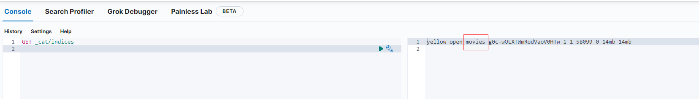
-
用kibana的命令行工具执行**GET /lua_cpu_monitor-2022.06.03/_search**命令,就能看见导入到Elasticsearch的数据
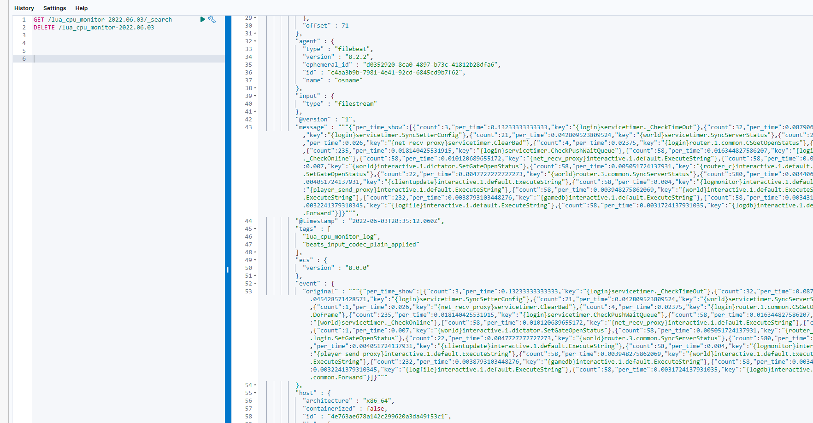
6.3.9. 自动重新加载配置命令
logstash.conf 修改成你自己的文件
sudo /usr/share/logstash/bin/logstash /etc/logstash/logstash.conf --config.reload.automatic
默认检测时间是**3**秒 可以通过下列命令修改 把<>号里面的2换成你想要的时间
sudo /usr/share/logstash/bin/logstash /etc/logstash/logstash.conf --config.reload.interval <2>
5.3.9. 卸载Logstash
# 查看安装的软件
sudo dpkg -l | grep logstash
#查看安装关联
sudo dpkg -L logstash
#移除安装软件
sudo dpkg -P logstash
#继续查看未卸载的目录和文件
sudo find / -name logstash
#移除目录和文件具体参考自己的环境
sudo rm -rf /var/lib/logstash &&
sudo rm -rf /var/lib/dpkg/info/logstash.* &&
sudo rm -rf /etc/default/logstash &&
sudo rm -rf /etc/init.d/logstash &&
sudo rm -rf /etc/logstash &&
sudo rm -rf /var/log/logstash &&
sudo rm -rf /usr/share/logstash
#在此查看是否有关联的目录和文件
sudo find / -name logstash
6.4. Kibana
6.4.1. 安装Kibana
-
下载安装公共签名
wget -qO - https://artifacts.elastic.co/GPG-KEY-elasticsearch | sudo apt-key add - -
接下安装 apt-transport-https 包
sudo apt-get install apt-transport-https -
将存储库保存到
/etc/apt/sources.list.d/elastic-8.x.listecho "deb https://artifacts.elastic.co/packages/8.x/apt stable main" | sudo tee -a /etc/apt/sources.list.d/elastic-8.x.list -
然后你就能安装Kibana了
sudo apt-get update && sudo apt-get install kibana
6.4.2. 启动Kibana
-
打开kibana.yml 文档
sudo vim /etc/kibana/kibana.yml修改 server.port,server.host 字段
-
启动
sudo systemctl start kibana.service -
自启动
sudo systemctl enable kibana.service -
查看 kibana日志
sudo vim /var/log/kibana -
用谷歌或者微软自带浏览器打开地址
http://10.40.38.66:5601
56.4.3. 卸载Kibana
# 查看安装的软件
sudo dpkg -l | grep kibana
#查看安装关联
sudo dpkg -L kibana
#移除安装软件
sudo dpkg -P kibana
#继续查看未卸载的目录和文件
sudo find / -name kibana
#移除目录和文件具体参考自己的环境
sudo rm -rf /var/lib/kibana &&
sudo rm -rf /var/lib/dpkg/info/kibana.* &&
sudo rm -rf /etc/kibana
#在此查看是否有关联的目录和文件
sudo find / -name kibana
6.5. Filebeat
搭配filebeat主要使用收集nginx数据, 和上面的利用logstash解析movies.csv，然后收集数据给elasticsearch的方式不一样
收集流程: nginx->filebeat->logstash->elasticdearch->grafana
6.5.1. 安装Filebeat
sudo curl -L -O https://artifacts.elastic.co/downloads/beats/filebeat/filebeat-8.2.2-amd64.deb
sudo dpkg -i filebeat-8.2.2-amd64.deb
6.5.2. 修改 filebat.yml 配置文件
sudo vim /etc/filebeat/filebeat.yml
修改下列几项
# ============================== Filebeat inputs ===============================
filebeat.inputs:
- type: filestream
id: my-filestream-id
enabled: true
paths:
- /home/hls/work/blueprint-server-runtime/log/lua_cpu_monitor.log
tags: ["lua_cpu_monitor_log"]
- type: filestream
id: my-filestream-id
enabled: true
paths:
- /home/hls/work/blueprint-server-runtime/log/lua_mem_monitor.log
tags: ["lua_mem_monitor_log"]
# ============================== Filebeat modules ==============================
filebeat.config.modules:
path: ${path.config}/modules.d/*.yml
reload.enabled: false
setup.template.settings:
index.number_of_shards: 1
# ------------------------------ Logstash Output -------------------------------
output.logstash:
# The Logstash hosts
hosts: ["10.40.38.66:5555"]
# ================================= Processors =================================
processors:
- add_host_metadata:
when.not.contains.tags: forwarded
- add_cloud_metadata: ~
- add_docker_metadata: ~
- add_kubernetes_metadata: ~
6.5.3. 测试filebeat启动后，查看相关输出信息
sudo filebeat -e -c /etc/filebeat/filebeat.yml -d "publish"
6.5.4. 后台方式启动filebeat
nohup filebeat -e -c /etc/filebeat/filebeat.yml >/dev/null 2>&1 & #将所有标准输出及标准错误输出到/dev/null空设备，即没有任何输出
nohup filebeat -e -c /etc/filebeat/filebeat.yml > filebeat.log &
6.5.5. 停止filebeat
ps -ef | grep filebeat
kill -9 进程号
6.5.6. 启动出现的问题
执行命令systemctl start filebeat.service就能够启动了。而后执行ps -ef|grep filebeat查看一下
能够看到已经启动胜利了，如果你发现没有启动成功，那么就执行 cd /usr/bin，在这个目录下执行./filebeat -c /etc/filebeat/filebeat.yml -e，这样会提醒具体的错误信息。而用systemctl start filebeat.service启动的时候没有任何提醒，连在 /var/log/filebeat/ 和 /var/lib/filebeat/registry/filebeat/ 都没找到错误信息，这里属实有点坑。
重新启动命令systemctl restart filebeat.service
6.5.7 去安装logstash的机器启动logstash
-
增加 logstash_filebeat.conf 文档
sudo vim /etc/logstash/conf.d/logstash_filebeat.conf把以下内容粘贴上保存
input { beats { port => 5555 #这个地址不能和logstash.yml 里面的api.http.host: 9600 一样，要不会出现地址已经被绑定的错误 } } output { if "lua_cpu_monitor_log" in [tags] { elasticsearch { hosts => ["10.40.38.66:9200"] index => "lua_cpu_monitor-%{+YYYY.MM.dd}" } } if "lua_men_monitor_log" in [tags] { elasticsearch { hosts => ["10.40.38.66:9200"] index => "lua_men_monitor-%{+YYYY.MM.dd}" } } } -
重新加载新的配置并启动logstash
先启动logstash，然后在启动filebeat，不然的话filebeat会找不到beats插件的:5555端口
sudo rm -rf /var/lib/logstash/.lock sudo /usr/share/logstash/bin/logstash -f /etc/logstash/conf.d/logstash_filebeat.conf --verbose --debug
6.5.8. 用filebeat 监控 nginx
-
修改 nginx conf 配置表
sudo vim /usr/local/nginx/conf/nginx.conf -
加入如下日志格式
log_format main '{"@timestamp":"$time_iso8601",' '"@source":"$server_addr",' '"hostname":"$hostname",' '"ip":"$remote_addr",' '"client":"$remote_addr",' '"request_method":"$request_method",' '"scheme":"$scheme",' '"domain":"$server_name",' '"referer":"$http_referer",' '"request":"$request_uri",' '"args":"$args",' '"size":$body_bytes_sent,' '"status": $status,' '"responsetime":$request_time,' '"upstreamtime":"$upstream_response_time",' '"upstreamaddr":"$upstream_addr",' '"http_user_agent":"$http_user_agent",' '"https":"$https"' '}'; -
对比修改下图对应的3个红框地方
-
重启 nginx
sudo pkill -9 nginx && sudo nginx -
用 http:192.168.70.132:7000 登录nginx 网站生成登录日志，然后打开 access.log 日志
sudo vim /usr/local/nginx/logs/access.log sudo tail -f /usr/local/nginx/logs/access.log
6.5.9. 卸载Filebeat
# 查看安装的软件
sudo dpkg -l | grep filebeat
#查看安装关联
sudo dpkg -L filebeat
#移除安装软件
sudo dpkg -P filebeat
#继续查看未卸载的目录和文件
sudo find / -name filebeat
#移除目录和文件具体参考自己的环境
sudo rm -rf /var/lib/filebeat &&
sudo rm -rf /var/log/filebeat/filebeat &&
sudo rm -rf /var/log/filebeat &&
sudo rm -rf /usr/share/filebeat
#在此查看是否有关联的目录和文件
sudo find / -name filebeat